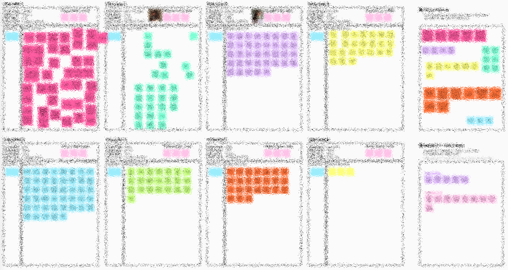
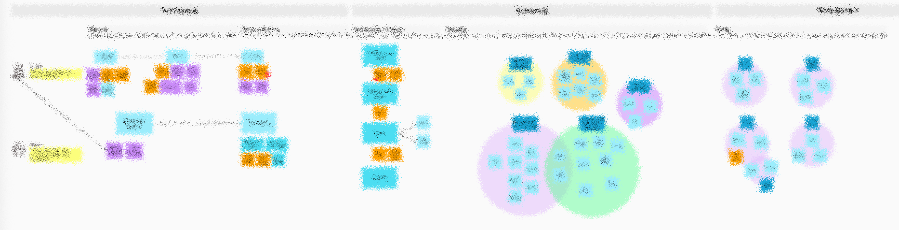

Reinventing the hair cleansing experience with P&G
OutcomeOur team of four Northwestern EDI students partnered with Procter & Gamble to identify design opportunities for the future of personal cleansing.
ExpertiseProduct designHuman-centered design
ClientProcter & Gamble
Visit any online retailer or walk into any store's hair care aisle, and you'll likely encounter an onslaught of mostly-similar bottles and tubes. In tomorrow's world where Gen Z and Alpha become target consumers, what's next for hair cleansing?
Note: Critical project details and final design solution cannot be disclosed due to confidentiality.
To begin tackling our very open-ended brief, my team conducted seven in-home interview visits with consumers in order to understand their attitudes, needs, desires, and the tensions present within the current cleansing journey.
I personally got to visit four consumers, and conduct two of the interviews myself.
Using what we learned from consumers and through secondary research, we were able to map the existing customer journey and distill our findings into key insights that informed several opportunities for design, which we framed as "How Might We" statements.
We started brainstorming around the HMWs that showed the most design potential for our target consumers, and then further developed our ideas into prototypes that would best address the questions we wanted to answer during consumer testing.
As the prototyping lead for my team, I created 18 (and did work on all) of the 25 low-fidelity prototypes we used over two rounds of consumer testing.

Ideation and prototyping
Testing and refinement
Final pitch to P&G!
Want to talk? Find me on LinkedIn or reach out at autumnbasinger@u.northwestern.edu